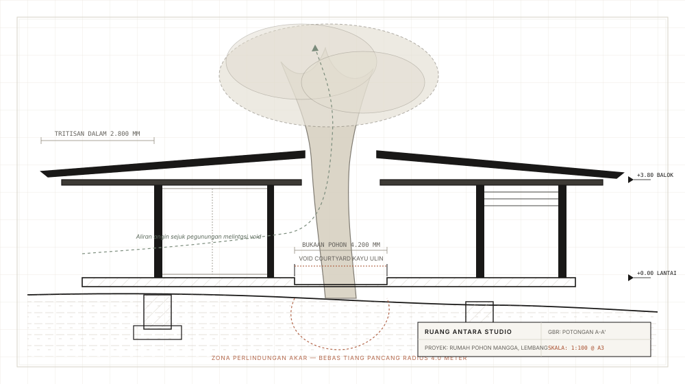

Rumah Akhir Pekan Mengelilingi Pohon Mangga 40 Tahun
“Ketika orang lain menyarankan menebang pohon demi mengoptimalkan luas lantai, kami memutuskan bahwa pohon itulah yang justru menentukan posisi setiap balok dan kolom.”
Klien memperoleh sebidang tanah berkontur di dataran tinggi Lembang yang sejuk dengan satu syarat mutlak: sebatang pohon mangga (Mangifera indica) berusia empat dekade yang tumbuh tepat di tengah lahan tidak boleh ditebang atau dirusak. Kontraktor konvensional menyarankan untuk menebangnya atau mengurungnya dalam bak pot beton sempit — tindakan yang dipastikan akan memutus akar tunjangnya dan membunuh pohon tersebut dalam hitungan tahun.
Ruang Antara mendekati tapak ini sebagai sebuah ekologi hidup. Kami merancang struktur pelat beton bertulang yang digantung secara kantilever, memundurkan seluruh pondasi telapak ke luar radius perlindungan akar sepanjang 4,0 meter. Denah rumah kemudian dipecah menjadi dua massa paviliun yang ramping: sayap ruang keluarga dan makan di sisi barat, serta sayap kamar tidur utama di sisi timur, dihubungkan oleh selasar dek kayu ulin terbuka yang melingkari batang pohon mangga.
Iklim mikro Lembang membawa penurunan suhu tajam dan kabut lebat di sore hari. Tritisan atap sepanjang 2,8 meter melindungi bukaan kaca geser dari tempias hujan pegunungan yang deras, sekaligus menangkap aliran angin lembah untuk mengalirkan kesejukan melalui void courtyard tanpa membutuhkan sistem pendingin mekanis.


Kemiringan atap landai dengan tritisan kantilever 2,8 meter menaungi dinding beton cetak papan kayu dari panas matahari barat.

Pintu pivot kayu setinggi plafon dapat dibuka penuh, meleburkan batas antara ruang keluarga dan desir daun kanopi pohon.